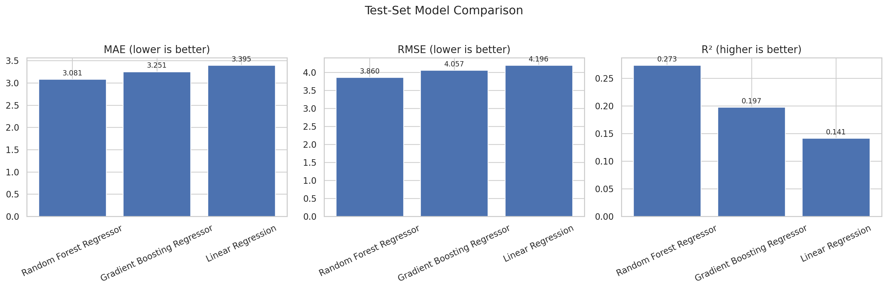
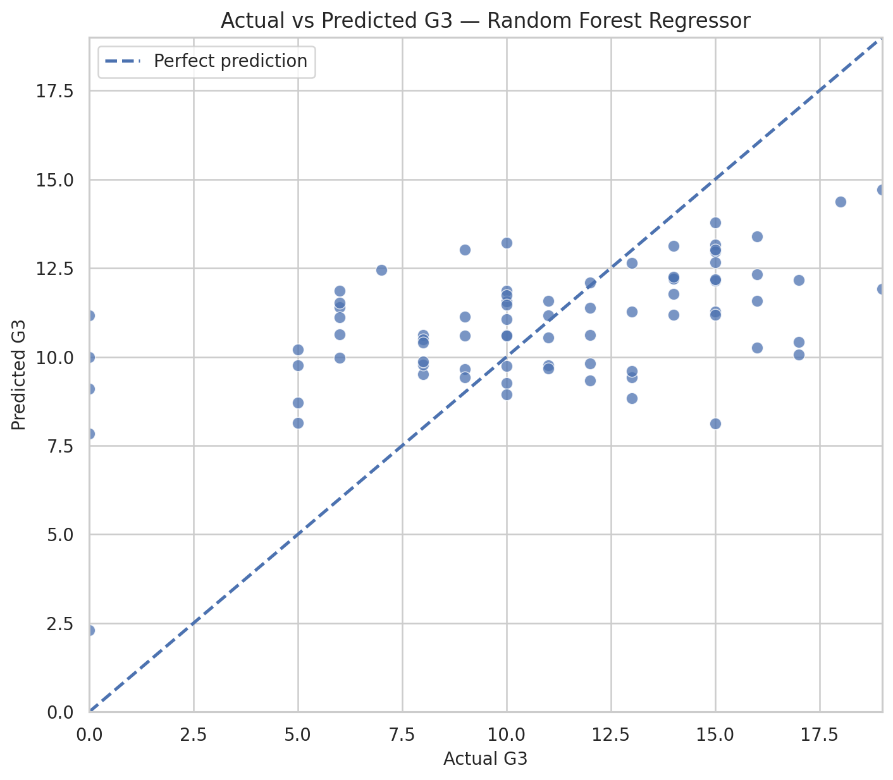
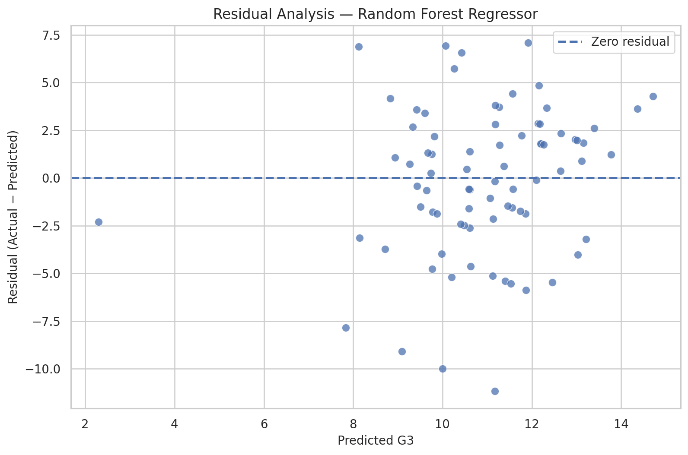
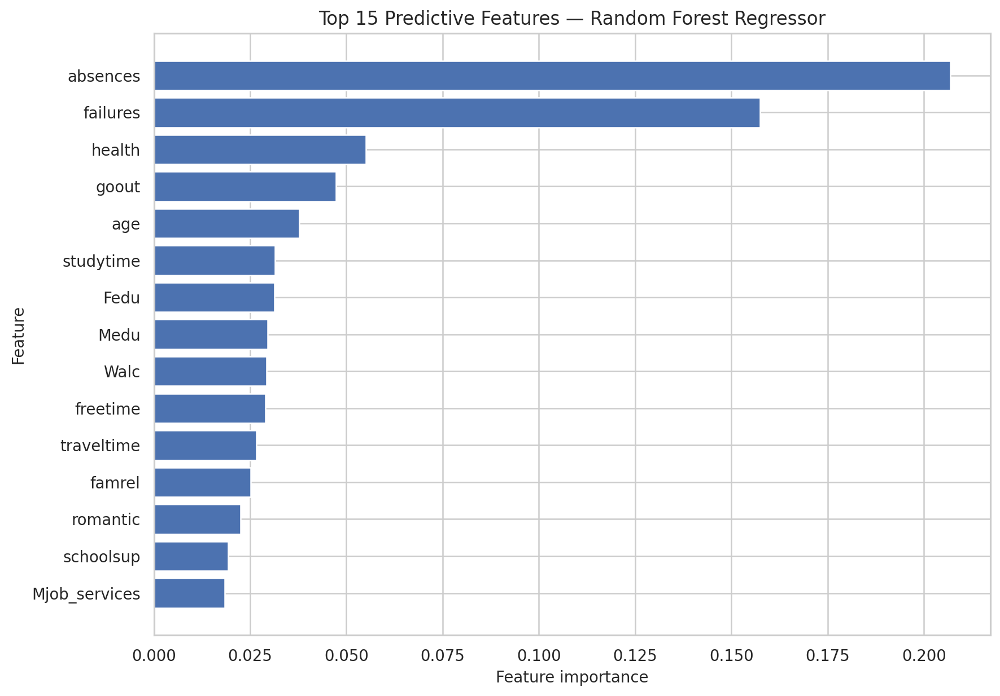

BEST MODEL
Random Forest
Regressor
An evidence-driven regression study of final mathematics grades using non-grade student and school-related variables.
All models were evaluated on the same unseen test set.
G1 and G2 were deliberately excluded from the predictors, so previous-period grades were not used to predict G3.
Lower error is better; higher R² is better.
| Model | MAE | RMSE | R² | Status |
|---|---|---|---|---|
| Random Forest Regressor | 3.0810 | 3.8602 | 0.2733 | BEST |
| Gradient Boosting Regressor | 3.2513 | 4.0570 | 0.1973 | — |
| Linear Regression | 3.3953 | 4.1957 | 0.1415 | — |



Random Forest feature importance is predictive importance, not causation.

failures had a negative Spearman association with final grade in this dataset.
Mother's education had a positive Spearman association with G3, but lower model importance.
Absences had the highest tree-model importance but only a weak simple association.
Use the cleaned and encoded Student Performance mathematics dataset.
80% training and 20% testing with random seed 42.
Compare Linear Regression, Random Forest, and Gradient Boosting.
Measure MAE, RMSE, and R² on unseen test observations.
G1 and G2 are excluded from X because they would create target leakage when predicting final grade G3.
The model provides limited predictive power. The dataset is observational and relatively small, so findings are predictive associations—not causal effects.
Random Forest was the strongest of the three tested approaches, but R² = 0.2733 shows that much of the variation in final mathematics grades remains unexplained by the available non-grade variables.
View full project on GitHub ↗